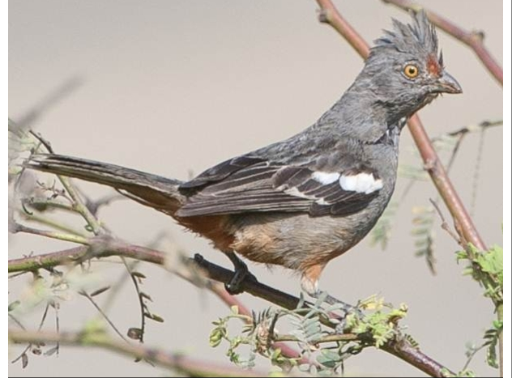

Lima es la capital de Perú ubicada en la árida costa del Pacífico del país. Pese a que su centro colonial se conserva, es una desbordante metrópolis y una de las ciudades más grandes de Sudamérica. El Museo Larco alberga una colección de arte precolombino y el Museo de la Nación recorre la historia de las civilizaciones antiguas de Perú. La Plaza de Armas y la catedral del siglo XVI son el núcleo del antiguo centro de Lima.
Lugares Turisticos
Parque El Olivar
Un pulmón verde de la ciudad, el Parque El Olivar de San Isidro es hogar de una serie de árboles de Olivo únicos en el Perú por su longevidad. Actualmente existen 1,670 olivos aproximadamente y 227 árboles de otras especies. El Parque también posee centros culturales, museos, bibliotecas, un teatro y una galería de arte.
Cómo llegar al Parque el Olivar: Desde Avenida Arequipa debes dirigirte hacia el este por Pallardeli, donde llegarás al centro del parque.
Malecon de Miraflores
Un listado de los mejores lugares turísticos de Lima no estaría completo si no incorporáramos al Malecón de Miraflores. Aquí la ciudad se encuentra con el mar, y donde puedes caminar por el lado de gigantescos acantilados que miran hacia el Pacífico. No olvides visitar Barranco, ubicado más al sur, pues es uno de los barrios más pintorescos e interesantes de Lima.
Cómo llegar al Malecón de Miraflores: El Malecón de Miraflores se encuentra en toda la costa
del distrito de Miraflores, por lo que es muy sencillo encontrar.
Animal en Peligro de Extinción
La Cortarrama Peruana

La cortarrama peruana estuvo olvidada por más de un siglo y solamente era conocida en un bosque pequeño cerca de Chiclayo, al norte del Perú. Como se sabe, en esta zona del país existen varios centros petroleros y es justamente gracias a la prohibición del ingreso de los pobladores a los campos de las empresas petroleras que todavía existe la cortarrama peruana y su hábitat de bosque seco también se mantiene. Esto se debe a que por muchos años las empresas no han dejado que la gente ingrese a las concesiones, teniendo como resultado un bosque seco conservado. Sin saber, la industria petrolera ha salvado una especie de la extinción.
¿Como Llegar a Lima?
Lima, oficialmente, según la Constitución, Ciudad de Lima,es la capital de la República del Perú. Está ubicada en la costa central del país, a orillas del océano Pacífico, integrando una extensa y poblada área urbana, flanqueada por el desierto costero y extendida sobre los valles de los ríos Chillón, Rímac y Lurín.